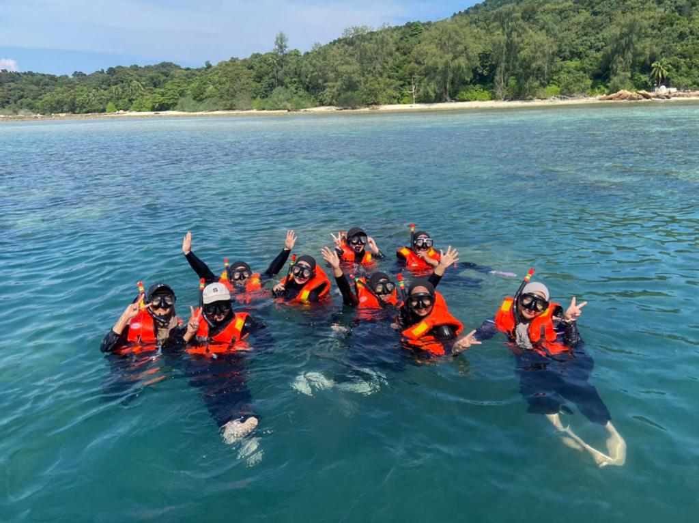
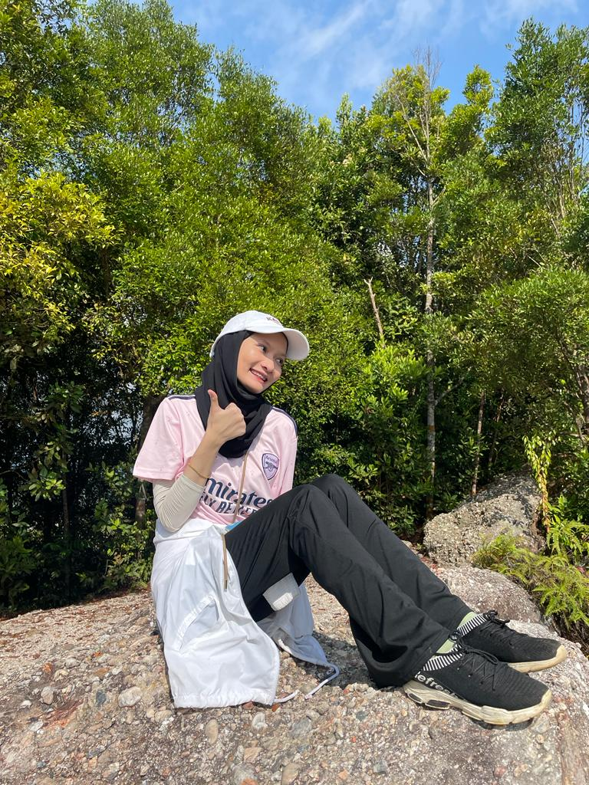

Hobbies
Snorkling
Going on a snorkeling trip can be an exciting and memorable adventure, offering you the opportunity to explore the underwater world and observe marine life up close. Snorkeling is a popular recreational activity that allows you to swim on the water's surface while wearing a snorkel mask, which covers your eyes and nose, and fins to propel yourself through the water.
Hiking
Hiking is an exhilarating adventure that fills me with excitement because it's a journey into the unknown, where every trail promises new discoveries and breathtaking vistas. The anticipation of stepping into the great outdoors, surrounded by the sights and sounds of nature, makes me so happy, as it offers an escape from the hustle and bustle of daily life. Every step on a hiking trail brings a sense of freedom and accomplishment that keeps me eagerly looking forward to the next hike.